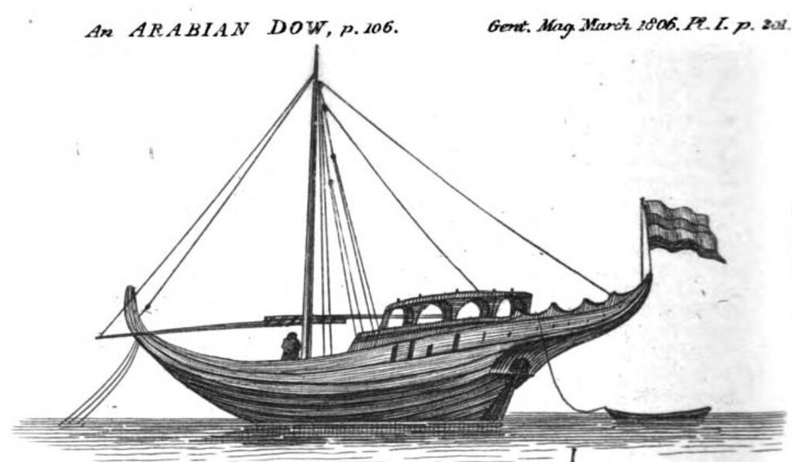

Отгадка, дамы и господа, но не полная
Вот уж никак не ожидал, что в первый день Нового года, вечером, ко мне в скучный в ообщем-то журнал забредет столько интересных путников. Спасибо, согрели вечер своим присутствием.
По комментариям видно тех эрудитов, которые правильно определили и предназначение корабля, и район его плавания, и предназначение гаджета. Им особое спасибо.
Сегодня не буду перегружать вечер сложными описаниями, поэтому приведу лишь часть отгадки. А именно, ту, которая касается самого корабля. О гаджете поговорим более подробно завтра (если султан не помрет или ишак не сдохнет).
Итак, корабль, показанный в нашей загадке, на первый взгляд представляет некую эклектическую смесь стилей и эпох, и в результате создается впечатление, что это просто фантазия художника. И тем не менее он существовал в действительности. Более того, он являлся типичным представителем целого семейства кораблей, которое морские историки обозвали "country-wallahs". Трудно перевести этот термин, он представляет собой комбинацию известного английского слова country и суффикса wallah, взятого из хинди и обозначающего человека, ответственного за какую-либо работу или являющегося жителем какого-либо района (ticket wallah — продавец билетов; билетёр; Bombay wallahs – обитатели Бомбея). Таким образом, мы имеем корабль-обитатель внутренних морей (country), расположенных у берегов Индии, Китая и Аравийского полуострова. На этих кораблях осуществляли торговлю между странами Востока, в частности, широко распространенную торговлю опием. На них же перевозили и паломников к святым местам мусульман. Как утверждает автор изображения, оно было выполнено с натуры в порту Джидда на Красном море в 1795 году.
Этот автор скрыл свое имя под псевдонимом “E.C.” Такими инициалами был подписан дневник путешествия на борту английского военного шлюпа “Swift”, перевозившего в 1795 году мусульманских паломников из Индии в Мекку. Дневник был опубликован в популярном ежемесячном журнале The Gentleman’s Magazine в 1806 году. Автор подписал свою гравюру “An Egyptian Ship”, однако ничто на рисунке не выдает принадлежность этого корабля Египту, кроме содержащегося в тексте утверждения автора, что изображен здесь корабль, перевозящий паломников из Египта и Абиссинии. Порт приписки не указан, так что мог он базироваться в любой из гаваней Красного моря и даже за его пределами. В принципе, и по конструкции корпуса мы не могли бы судить, где построено судно, если бы не устройство кормы: европейцы так не делали, оно выдает арабский след. Вот гравюра с изображением арабского доу примерно того же периода:

Налицо схожесть технического решения при оформлении кормы.
Тот факт, что корабль был предназначен для перевозки большого количества пассажиров, подчеркивается наличием многочисленных портов в корме и в бортах судна. Они расположены нерегулярно, что дает основание не причислять их к артиллерийским портам, а считать всего лишь отверстиями для доступа света и воздуха в пассажирские помещения. Впрочем, архитектурное оформление кормы судна также больше напоминает архитектуру мечети где-нибудь в мусульманской стране, чем конструкцию кормы европейского военного корабля. В кормовых помещениях, по всей видимости, находились состоятельные паломники, простые смертные же размещались на палубах, расположенных в несколько ярусов.
Завтра, как уже обещали, поговорим об интересном гаджете в кормовой части корабля.